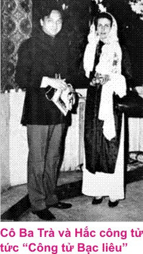

Cậu Ba Qui. làm sui với ông đốc phủ Kiểng Nguyễn Duy Hinh (Bến Tre) là một cự phú Cù lao Mình. Trong bữa cơm, có lần vui miệng, bà đốc phủ Kiểng hỏi con dâu (con gái cậu Ba Qui):
– Mỗi năm đến mùa lúa, không biết anh chị sui ở bễn thâu được bao nhiêu giạ lúa hả con?
– Dạ thưa má, chừng 40 đến 50 giạ!
– Ủa! Ít quá làm sao đủ xài hả con? – Bà đốc phủ Kiểng ngác nhiên hỏi tiếp.
Con dâu trả lời:
– Thưa má, giấy xăng (cent: 100 đồng, có hình bộ lư, nên còn gọi giấy bộ lư) bó lại từng bó, chất đầy từ 40 đến 50 giạ!
– Như vậy nhiều quá hả con!
(Lời cụ Nguyễn Văn Vực Xem thêm Nam Kỳ Lục Tỉnh, tập I cùng tác giả.)
Không biết có phải tại cô Ba Trà thích đi chơi cùng một lúc với hai công tử Ba Qui, Phước George hay không, vào năm 1927 cả hai công tử ấy cùng tranh nhau chiếm trái tim người đẹp mà lúc nào người ta cũng thấy bộ ba ấy xuất hiện khắp nơi. Khi thì ăn nhà hàng Cửu Long Giang (Mékong), khi thì các Bungalow Cần Thơ. Sóc Trăng.
Tìm hiểu lý lịch câu Ba Qui chúng tôi được cụ Nguyễn Văn Vực cung cấp chi tiết như sau:
“Tại Bạc Liêu có ông Hội đồng Trần Trinh Trạch. còn gọi “Hội đồng Tó”, là một người giàu nhứt miền Tây, nguyên là một người Tiều lai, đến lập nghiệp tai Bạc Liêu hồi đầu thế kỷ này. Là người thông minh, có học chữ Pháp, nên được thâu nhận vào làm thư ký Toà Bố (Toà hành chánh tỉnh trước năm 1975). Sau đó, ông ứng cử và đắc cử vào chức vụ Hội đồng Quản hạt Nam Kỳ, cơ quan Tư Vấn cao cấp nhất thuộc địa Nam Kỳ thời đó. Trong những năm kinh tế khủng hoảng (1932,. 33, 34). nhà văn Bùi Thế Mỹ đã viết:
“Nghèo đêm thằng mình còn chạy quýnh,
Giàu như ông Trạch cũng buồn hiu…”
khiến chúng tôi đủ biết sự giàu có và danh tiếng ông hội đồng Trạch lớn lao đến bực nào. Ông Trần Trinh Trạch có ba người con trai:
– Trần Trinh Đinh tức công tử Hai Đinh
– Trần Trinh Qui tức công tử Ba Qul
– Người em út tên Tám Bò sở dĩ nổi danh là “công tử Tám Bò” vì cậu có thành tích nhậu say, bò di mò gái. Có người nói Tám Bò tên thật là Trần Trinh Khương (?).
Cậu Hai Đinh cũng là một công tử ăn chơi bạt mạng, coi tiền như cỏ rác, nổi danh khắp miền lục tỉnh.Công tử Hai Đinh cũng lên xuống ăn chơi Sài Gòn như người em (Ba Qui), nhưng tên tuổi cậu ít được người đời nhắc đến bằng công tử Ba Qui.

Mỗi lần lên Sài Gòn, câu Hai Đinh ở tại khách sạn Contmental, khách sạn Majestic. Khi vào sòng bạc, đặt một tụ vài chục ngàn là thường. Hồi mấy thập nên đầu thế kỷ 20, Bạc Liêu là một tỉnh trù phú bực nhứt Nam Kỳ, có nhiều nhà giàu, đại điền chủ triệu phú hơn bất cứ tỉnh nào của miền Nam. Ngay trong thời kỳ khủng hoảng kinh tế, lúa sụt giá chỉ còn 2 cắc (0$20) một giạ mà các công tử con cháu họ vẫn ăn xài huy hoắc, coi tiền như rác ngoài đường.Các đại điền chủ Bạc Liêu làm giàu nhờ hai nguồn lợi: ruộng muối và đất ruộng. Một người trong gia đình cậu Tư Phước George cho tôi biết: “Bạch công tử Phước George giàu về ruộng đất, còn Hắc công tử Ba Qui giàu về ruộng muối”. Theo Vương Hồng Sển trong “Sài Gòn năm xưa” cho biết: cứ mỗi ngày nắng tốt, gia đình ông Trần Trình Trạch thâu huê lợi ruộng muối từ 4000 tới 5000 đồng”. Muối của ông hội đồng Trạch rất nổi tiếng, được người miền Nam ưa thích và gọi là “muối Ba Thắc”. Còn theo tài liệu của Cộng Sản cho biết: riêng ruộng đất, ông hội đồng Trạch có đến 145 ngàn mẫu, rộng bằng một tỉnh trung bình ở miền Nam. Tỉnh Bạc Liêu có hàng mấy chục gia đình thuộc hạng đại điền chủ, có trên 100 mẫu ruộng. Những người giàu có tiếng tăm nhất của Bạc Liêu ai cũng nghe danh là ông hội đồng Điều (Ngô Phong Điều). Gia đình ông có một người con gái gả cho luật sư Trình Đình Thảo. Ông bác vật Lưu Văn Lang, quê ở Sa Đéc một trí thức lớn của Nam Kỳ, cũng có vợ là người Sóc Trăng, Bạc Liêu. Ông kỹ sư Lưu Văn Lang làm sui với một gia đình danh giá ở Bạc Liêu là ông Trương Văn Yên. Ruộng đất của ông hội đồng Điều cò bay thẳng kiếng. Ông hội đồng Điều cơ sở thích mê đá gà, nổi tiếng là người chọi gà nòi số một Bạc Liêu. Nhà ông Điều lúc nào cũng có hàng chục gà trống. Còn gà lứa, gà giò, gà con. mới nở… lúc nào cũng có cả chục bầy. Thú vui thứ hai của hội đồng Điều là ăn con đuông (ấu trùng của kiến dương) vì cho rằng rất bổ. Trong nhà ông, có cất hẳn một trại để nuôi đuông. Ông mua đọt cau, đọt dừa, đọt chà-là chất sẵn như núi để cho đuông ăn. Nhưng độc đáo hơn hết, ông còn nuôi đuông trong cây mía. Ông hội đồng Điều là người phong lưu, giàu có như vậy nhưng chỉ được người địa phương liệt vào hạng nhà giàu thứ… tư.
Ngoài ông hội đồng Trạch, thiên hạ đệ nhứt gia miền Tây, đất Bạc Liêu còn những dòng họ lớn. giàu có, nhiều thế lực như dòng họ Cao Triều, Chung Bá. Ông Cao Triều Phát (1888-1956) có qua Pháp làm thông ngôn. Lúc hồi hương, lập hệ phái Cao Đài Hậu Giang tại Bạc Liêu. Cao Triều Phát cùng với Trần Đạo Quang lập ra Minh Chơn Đạo đặt Toà Thánh tại Giồng Bướm (1932) xã Phong Thanh, quận Giá Rai, tỉnh Bạc Liêu. Trong chín năm kháng chiến ở miền Tây, Việt Minh lợi dụng ông Cao Triều Phát triệt để. Chúng phong cho ông Phát làm Chủ tịch 12 phái Cao Đài hợp nhất để chống lại với Cao Đài Tây Ninh. Biết dã tâm của Cộng Sản nên chống lại bọn chúng. Bọn Cộng Sản muốn moi tiền gia đình triệu phú này nên hồi kháng chiến, Hồ Chí Minh gởi tặng cho ông Phát một cái áo lụa tầm thường, nhưng trong “tuần lễ vàng”, chúng đem đấu giá 50 vạn (mỗi vạn là 10 000 đồng) và ép buộc ông Cao Triều Phát phải mua ủng hộ!
Gia đình giàu có và danh tiếng thứ ba là gia đình ông Chung Bá Khánh, trước học trường Chasseloup Laubat, sau đó du học bên Pháp. Lúc về. ông theo Phật giáo Hòa Hảo khi Giáo chủ Huỳnh Phú Sổ bị an trí tại Bạc Liêu. Nơi đây giáo chủ Huỳnh Phú Sổ thâu nhận thêm nhiều tín đồ mới, có uy tín ở địa phương như thầy ký Giỏi (thư ký Soái phủ Nam Kỳ), hội đồng Điều, Chung Bá Khánh. Năm 1945 ông Chung Bá Khánh là một yếu nhơn của Hòa Hảo miền Tây, có tháp tùng với đại diện Việt Minh là Nguyễn Văn Tây qua Sóc Trăng diễn thuyết (5 tháng Chín 1945). Hai tháng sau. Cộng Sản trở mặt, nửa đêm bao vây bắt ông Chung Bá Khánh cùng vài người khác như Võ Văn Thời, Đỗ Hữu Thiêu đem xuống Ba Động (Trà Vinh) trấn nước chết. Ông Lâm Thành Nguyên cũng là nạn nhơn trong cuộc thảm sát nầy, may mắn nhờ biết lội. cởi trói và trốn vào trong bụi rậm sống sót được.
Anh em với Chung Bá Khánh còn có ông Chung Bá Vạn còn gọi hội đồng Banh, và người con trai gọi là “công tử Chung Bá Hiền”. Hiền cũng là một trong những người đam mê cô Ba Trà cho đến nỗi cũng vì cô mà suýt chút nữa mất mạng. Số là khi cô Ba theo mấy người quen xuống Bạc Liêu mở sòng hốt me. Gặp khi xui, cô thua luôn sạch túi. Cuốn “Sài Gòn tap-pín-lù” của Vương Hồng Sen kể lại cuộc đời tự thuật cô Ba Trà đoạn này như sau:
“…Cái vòng quanh lục tỉnh của cô Ba Trà, làm cho nhiều người bàn tán, đồn ràng cô thua bài quá nhiều, nên đi vơ vét các tay chơi ở tỉnh. Kỳ thật cô ghé nghỉ ngơi ở lữ quán Bungalow để dùng cơm Tây và đổ xăng vào xe. Cô vẫn “mở phòng”. Khách sộp nào muốn ra mắt phải “đi lễ” trọng hậu. Lễ nho nhỏ có 100 đồng, cô đều gọi bác tài và a-múi phân phát trước mặt làm cho khách hổ thẹn ra về. Chớ nào cô hạ mình rước khách cóc keng như gái ăn sương tứ thời nhị hạng!
“Có một chuyến xuống Bạc Liêu, cô cạn vốn, định quay xe trở về Sài Gòn tìm phương cách khác. Cậu Hai Hiền, đồng học Chasseloup những năm 1919-23 với kẻviết bài này (cụ Vương Hồng Sễn) hay được, định cầm cô ở lại giúp vốn cho cô gây sòng khác liền về nhà lấy bạc thì cô đã lên xe sóng lướt trăm ngàn. Xe cô vừa ghé lữ quán Bungalow Sóc Trăng, thì được tin xe cậu Hiền, vì tránh con bò đi lang thang ngoài lộ thắng gấp, lật xuống ruộng, đưa bốn bánh lên trời. Câu Hiền thoát chết. nhưng gãy lọi một giò, máu me đầy mình, đang nằm nhà thương cho lương y điều trị. Cô tức tốc vào dưỡng đường, sai a-múi lấy một bộ pyjama hường của mình thay cho bộ âu phục của Hiền rách nát. Hiền, khi lành mạnh vẫn xem bộ y phục của cô như vật linh, bùa lạ…”
Bạc Liêu cũng là quê hương của công tử “Dù Hột”, tên cúng cơm là Huỳnh Văn Phước, cũng nổi danh ăn chơi “đổ quán xiêu đình” một thời ở Nam Kỳ. Huỳnh Văn Phước hay công tử Dù Hột là người nổi tiếng đầu tiên ở Bạc Liêu, trước cả công tử Hai Định và Ba Qui. Thân phụ cậu làm xã trưởng xã Dù Hột, vì thế mới có danh công tử “Dù Hột”, Sau này thân phụ công tử Dù Hột làm hương chủ, nên còn gọi là Hương chủ Chá. Mỗi lần ra đường công tử Dù Hột có em út theo rần rần. Trên lộ mỗi lần đi chơi có mấy chiếc xe hơi. Ở dưới sông có cả đội ca-nô!
Còn ở Sóc Trăng, các danh gia, cự phú là những ai?
Giàu nứt đố, đổ vách, nổi danh ở Sóc Trăng có lẽ là bà phủ An (Lê Văn An). Bà ở trong một ngôi nhà đồ sộ lúc đó: Hai từng lầu bê tông cốt sắt kiên cố, nằm phía chợ cá, châu thành Sóc Trăng. Ông Lê Văn An là người quê ở Đồng Môn (Long Thành) là nơi sinh quán của bà Bùi Thị Lãm, vợ Mạc Cửu, mẹ của Mạc Thiên Tích. Còn bà An là người quê ở xã Long Thành, phía trong cầu Thiêng Đức, trên đường đi xuống ngã tư Long Hồ, hồi đó thuộc tổng Bình Long, tỉnh Vĩnh Long. Hai ông bà đến Sóc Trăng thành lập sự nghiệp đồ sộ. Năm 1931 khi bà mất (ông mất trước), để lại hơn 1000 mẫu ruộng tại làng Hỏa Tú (Sóc Trăng), một số tiền mặt 80.000 đồng (trị giá bằng 1000 mẫu ruộng) trong tủ sắt, một ô hột xoàn và mấy hộp đựng vàng lá. Trong các lẫm lúa, còn hơn 10.000 giạ. Gia đình ấy thuộc bên vợ của ông Vương Hồng Sển. nên ông biết cặn kẽ, và thuật lại trong quyển “Hơn nửa đời hư”.
Gia đình giàu thứ hai là cự phú Nguyễn Tấn Phát, đương thời làm xã trưởng, dân địa phương thường gọi xã Phát, và gọi đất của ông là “Điền xã Phát” để phân biệt với “Điền ông Kho”, (tức Tây Gressier). Ông có hai người con trai là Nguyễn Tấn Phong và Nguyễn Tấn Nghị. Đến đời các cháu vẫn còn rân rát như Nguyễn Tấn Quyền, Nguyễn Tấn Lợi, Nguyễn Tấn Lê là những người biết làm ăn, chăm học thành tài có địa vi. tiếng tăm một thời.
Gia đìnht giàu thứ ba là ông Trần Đắc Chanh, làm Hương quản, nên dân chúng thường gọi ông Hương Chanh. Các con là Trần Đắc Lợi (ông Chủ Lý), Trần Đắc Chương, Trần Đắc Tấn… Gia đình này là người Tiều lai, nên các con thường có hai tên: ông Lại còn có tên là “Chủ Lý”, ông Chương còn gọi là “ông Chen”. Ngày nay, dư âm các thế gia vọng tộc ấy còn giữ lại các tên:
Thói thường khi nói đến các công tử Bạc Liêu, người đời có mặc cảm đó là những kẻ chỉ biết ăn chơi, xài phí không giới hạn. Cuộc đời của họ không đóng góp điều gì ích nước lợi dân, ít ai biết. Ở Bạc Liêu cũng có những hạng công tử thanh lịch, giàu tiền lẫn ìinh thương, có nhơn cách đáng kính trọng. Người đó là công tử Ba Cân tức Phạm Kim Cân, là người hào hiệp, trọng nghĩa khinh tài. Gặp ai hoạn nạn, nghèo khó, Ba Cân thường đem tiền đến giúp bất vụ lợi; cho nên người đời tặng cho Ba Cân biệt danh Đơn Hùng Tín. Tín là người đời nhà Đường (618-907) hay chu cấp tiền bạc cho những kẻ nghèo khó, các anh hùng lỡ vận. Khi Nguyễn An Ninh xuống Sóc Trăng, Bạc Liêu, công tử Ba Cân tiếp ông như hạng thượng khách, vì biết Nguyên An Ninh là một nhà chí sĩ cách mạng, có tâm hồn cao thượng Nhưng ông Ninh vốn là người tự trọng, không làm phiền Ba Cân.
Nhắc đến những gia đình giàu lớn, các đại điền chủ, người Cộng Sản luôn luôn kết án là những kẻ bóc lột xương máu dân lao động Nhưng bản thân các cán bộ Cộng Sản trong thời kháng chiến chống Pháp, thường tìm đến các nhà giàu để ăn chực, xin món này vật kia mà chúng tôi từng chứng kiến,. nên biết rõ tâm địa bọn chúng. Không phải hạng nhà giàu nào cũng là trọc phú, bất nhơn cả. Tôi được nghe nhà văn Xuân Vũ kể lại một đai điền chủ ở làng Hương Mỹ, quân Mỏ Cày, tỉnh Bến Tre, là ông hội đồng Nhơn, một nhà giàu hào sảng, nhơn đức. Nhà của ông như những dinh cơ hàng mấy cái liên tiếp, chẳng khác nào dinh thự của Phó vương Hoàng Cao Khải ở Thái Hà Ấp. Ông tên thật là Đoàn Hưng Nhơn, giàu tiền bạc lẫn nhơn nghĩa. Có lần ông bán nguyên một ghe chài lúa (khoảng 7 tới 10.000 giạ cho làng sở tại cất trường học vì thấy ngôi trường hiện hữu xập xệ quá. Ông còn lập ra từ đường họ Đoàn (nhà thờ họ). Tất cả những ai họ Đoàn, không phân biệt giàu nghèo, có thể tới đó dự lễ cùng họ chung, cùng nhau ăn uống thân mật như người trong một đại gia đình. Đến khi người trong ho Đoàn mất, cứ đem bài vị đến thờ trong từ đường, có người lo hương khói, cúng giỗ. Ông hội đồng Nhơn thứ tư, có bà chị ruột thứ hai, là bà Đoàn Thị Quá. Bà Quá có cô con gái thứ năm, gả cho cố Thống Tướng Lê Văn Tỵ nguyên Tổng tham mưu trưởng Quân Lực Việt Nam Cộng Hòa.
Nói về cuộc dời ngoại hạng của ông hội đồng Trạch, chúng tôi có viết trong “Nam Kỳ Lục Tỉnh, tập I”, xin miễn kể lại. Hồi đó, các công tử thường hay kình chống nhau nhưng không ra mặt. Rừng nào cọp nấy. Hắc công tử Ba Qui nắm quyền kiểm soát các trà đình tửu điếm miền Tây. Các khách sạn Cần Thơ, Sóc Trăng, Bạc Liêu phải nghe lịnh câu Ba Qui. Riêng cậu Tư Phước George làm chúa ở Mỹ Tho. Lịnh cậu ban ra, các nhà hàng khách sạn phải tuân răm rắp. Còn Sài Gòn là đất dụng võ chung.. Tuy vậy, cả hai công tử đều có chung một phong cách mã thượng, coi thường tiền bạc, không ghen tương vì gái đẹp dù người đó là huê khôi Ba Trà
Một hôm chiếc xe Fiat sport của cậu Tư Phước George vừa thắng cái “két” trước khách sạn Hôtel de L’ouest Cần Thơ, rồi cậu Tư ung dung dẫn cô Ba Trà, y phục như một bà hoàng, bệ vệ bước vào khách san. Con nít, người buôn bán quanh chợ đều trố mắt nhìn cặp tình nhơn vương giả ấy với ánh mắt thèm thuồng. Chỉ nửa giờ sau, chiếc xe sport Alfa Roméo 8 máy của câu Ba Qui, cũng đỗ xịch kế bên. Hôm ấy câu Ba Qul mặc đồ thể thao, kiếng mát gọng đồi mồi Hà Tiên, cổ quàng khăn lông, thứ hảo hạng mà người Pháp hay sử dụng trong nhà tắm, mình mặc áo thun loại mắc tiền. Chiếc xe vừa ngừng, tài xế vôi vàng mở cửa, và đứng im trong thế chào kính. Công tử Ba Qui cặp nách cái nón nỉ, bệ vệ xuống xe đi thẳng lên lầu. Vừa gõ cửa, cậu Tư biết ý, liền mở ra, tươi cười chào xã giao bằng tiếng Pháp:
– Bonjour toi!
Cả hai, cậu Tư và cô Ba Trà tươi cười bắt tay cậu Ba Qui không tỏ vẻ ngượng ngùng hay khó chịu gì cả. Quý tộc ăn chơi có khác Sau đó cả ba được mời đến một phòng sang trọng dành sẵn để dùng cơm. Cơm xong, họ đánh bài tại phòng ngủ. Cứ mỗi lần cậu Ba Qui hay cậu Tư Phước George thua, thì chung tiền đủ cho cô Ba Trà. nhưng trái lại, khi cô Ba thua thì kề má ra cho các cậu hun. Thế là huề. Chuyện du lịch lục tỉnh lần đó đem lại cho cô Ba gần 10.000 đồng.
Sau đó những lần cậu Ba Qui lên Sài Gòn đều dắt cô Ba Trà đi ăn uống, đi mua sắm những món nữ trang đắt giá, những son phấn thượng hảo hạng không bao giờ tiếc của. Thuở đó nhà cô Ba Trà chính là “một cung dành cho công chúa”. Sau này cô có lập “nguyệt tiên cung” để đón những khách đa tình nhưng phải giàu tiền. Những khách vãng lai lúc đó thường là những tay chơi thượng lưu, những người có máu mặt như luật sư Dương Văn Giáo, có vợ đầm, nhưng ăn chơi lịch lãm, ông toà Trần Văn Tỷ, một thanh niên hào hoa, thầy Sáu Ngọ, vua cờ bạc, ông bác sĩ Lê Quang Trinh, và các công tử vừa kể đoạn trên. Có một điều lạ, ít khi cô Ba đi chơi lẻ với một người. Lúc nào cô cũng đi ăn, đi coi hát, đi đánh bạc cặp kè với nhiều người cùng một lúc. Có lần cô đi coi hát Cải lương với ông toà Tỷ, bác sĩ Trinh và thầy Sáu Ngọ. Còn đi ăn nay với chủ nhà hàng nầy, mai ông bá hộ kia.
Nhắc về cá tính Hắc công tử Ba Qui, chúng tôi được nghe kể:
“Thân hình cậu Ba Qui to con, tướng vạm vỡ, da ngăm đen nên có biệt danh Hắc công tử để phân biệt với cậu Tư da trắng trẻo Mỗi lần ngồi lên chiếc xe du lịch 8 máy cậu Ba cầm lái, xả hết tốc lực, không cho bất cứ chiếc xe nào qua mặt. Tài xế của cậu cũng phải biết ý cậu, nếu không, mất việc như chơi. Khi xe đang chạy thấy thấp thoáng trước mắt có chiếc xe nào phải rượt qua mặt chiếc xe đó cậu mới nghe. Có một lần trên đường từ Mỹ Tho về bắc Mỹ Thuận, tài xế xe cậu Ba Qui, vì tránh ổ gà, ép vô lề để một chiếcc xe Sport khác qua mặt. Lần đó khi tới Cần Thơ, cậu kêu tài xế đến, cho 200 đồng rồi biểu “đi kiếm chỗ khác làm ăn”
Cũng như cậu Tư Phước George, cậu Ba Qui là một tay nhảy đầm rất có hạng. Các vũ trường thanh lịch hồi đó đều nể mặt cậu Ba vì sự ăn xài như một nhà quý tộc vương giả của cậu. Mỗi khi câu hết tiền, sai người cận vệ ra chành lúa lấy tiền trước trị giá bằng một hai ghe chài, đem về cho cậu. Mặc dầu cậu phong lưu, ăn xài sang trọng nhưng cũng không che giấu được cốt cách của một người ít học. Cậu thường gọi gia nhơn, bồi bếp, tôi tớ, võ sĩ bằng “mầy”, “bây” và xưng “tao” với bon họ. Vào sòng bạc, lúc nào cậu cũng chơi trội. Tiền đặt một tụ bài, cậu “ngắt ngang xấp bạc” không cần đếm. Mỗi lần nhà cái chung tiền, phải đếm giùm cậu Một tụ bài, cậu đặt năm ba ngàn là chuyện thường
Nếu phải so sánh hai công tử tiêu biểu của Nam Kỳ lúc bấy giờ, người ta thường cho câu Tư Phước George là người có tư cách quý phái hơn vì cậu từng sống ở Pháp nhiều năm, ăn chơi kiểu các ông hoàng bà chúa Âu Châu. Còn cậu Ba Qui, tuy cũng có xuất ngoại qua Pháp, qua Nhựt nhưng chỉ đi du lịch trong thời gian ngắn mà thôi.
Theo lời cụ Nguyên Văn Vực kể lại rằng Thống Đốc Nam Kỳ Cognacq là một người rất hống hách, nhưng phải hạ mình cầu thân với ông Hội đồng Trạch và ông Quách Đàm. Có lần trong buổi tiệc vui miệng, Cognacq kêu ông hội đồng Trạch bằng “papa”. Hai ông hội đồng Trạch và Quách Đàm thường ra vô dinh Thống Đốc như đi chợ. Một lần, để lấy lòng hội đồng Trạch, Cognacq đề nghị tặng ông hội đồng Trạch “Bắc đầu bội tinh” là huy chương danh dự nhất của Pháp. Đề nghị ấy ra đến Toàn quyền Hà Nội là Merlin, bác bỏ với lý do:
– Thằng Chệt này có công trạng gì mà tặng “Bắc đẩu bội tinh” hạng nhứt?
Nghe được thái độ trịch thượng ấy, Hội đồng Trạch nhứt đinh trả thù, bằng cách trục Merlin ra khỏi chức Toàn quyền Đông Dương. Lần đó, hội đồng Trạch thuê nguyên một chiếc tàu khách hạng sang chạy đường Sài Gòn- Marseille giá 60 000 đồng, chở theo nhiều tặng vật quý giá (đồ cổ) để tặng các bạn dân biểu, nghị sĩ của ông bên Pháp. Chính các ông nghị ấy vận động quốc hội Pháp hạ bệ Toàn quyền Merlin, làm cho hội đồng Trạch mát ruột. Lần đó cậu Ba Qui tháp tùng qua Pháp chơi hết ba tháng. Về sau nghe đâu câu Ba Qui có du lịch Nhựt Bổn, ăn ở tại những khách sạn sang trọng như quý tộc, nhưng dường như người Nhựt không mấy quý trọng đối với một người thờ ơ với việc nước, xài tiền hoang phí như vậy.
Về sở thích, cậu Tư Phước George thích người vừa đẹp vừa quý phái. Cậu Ba thích các cô gái nửa chợ nửa quê, nhưng có thân hình khêu gợi, hấp dẫn. Vì thế sau khi chán chê người đẹp “Ba Trà”, cậu Ba Qui còn cặp với một cô gái lai khác, đàn em cô Ba Trà, đó là cô Tư Nhị mà chúng tôi sẽ đề cập tới trong chương sau.